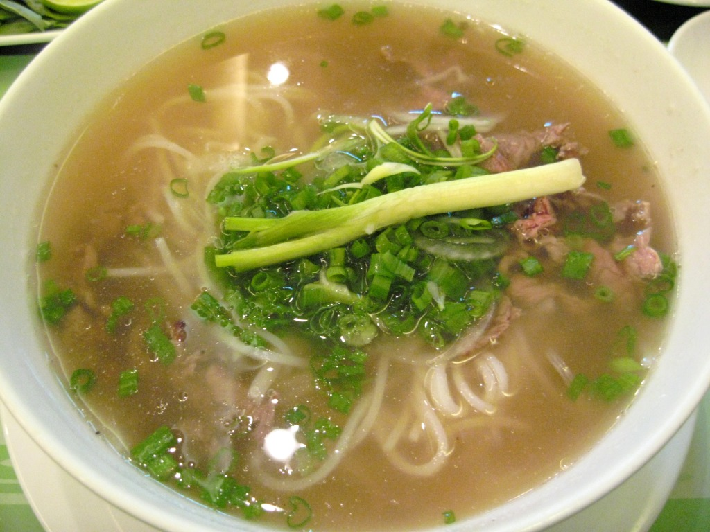

Pho

Description
This is the recipe for a delicious Vietnamese beef pho... mmm yum.
Ingredients
- 2 large onions (halved)
- 150g / 50z ginger
- 10 star anise
- 4 cinnamon quills
- 4 cardamom pods
- 3 cloves
- 1.5 tbsp coriander seeds
- 1.5kg / 3lb beef brisket
- 1kg / 2lb meaty beef bones
- 1kg / 2lb marrow bones
- 3.5 litres / 3.75 quarts water
- 2 tbsp white sugar
- 1 tbsp salt
- 40ml / 3 tbsp fish sauce
- 50g / 1.5 oz dried rice sticks
- 30g / 1 oz bef tenderloin, very thinly sliced
- 3-5 brisket slices
Steps
- Heat a heavy based skiller over high heat (no oil) until smoking.
- Place onion and ginger in pan cut side down. Cook for a few minutes until charred, then turn.
Remove and set aside.
- Toast spices lightly in a dry skiller over medium high heat for 3 minutes.
- Rinse bones and brisket then cover with water in large stock pot.
- Boil for 5 minutes, then drain.
- Rinse each bone and brisket under tap water.
- Wipe pot clean, bring 3.5 litres / 3.75 quarts water to a boil.
- Add bones and brisket, onion, ginger, and spices.
- Add onion, ginger, spices, sugar, and salt. Water should just barely cover everything.
- Cover with lid, and simmer for 3 hours.
- Remove brisket (should be tender and fall apart), cool then refrigerate for later.
- Simmer remaining soup UNCOVERED for 40 minutes.
- Strain broth into another pot, discard bones and spices. Should be about 2.5 litres / 2.65 quarts (10 cups). If there is excess, reduce the broth.
- Add fish sauce, salt and sugar according to taste. Broth should be beefy, fragrant with spices, savoury, and barely sweet.
- Prepare rice noodles in a bowl prior to serving. Top with raw beef and brisket.
- Ladle the hot broth over the noodles and beef, which should cook the beef to medium rare.
- Serve with toppings on the side!